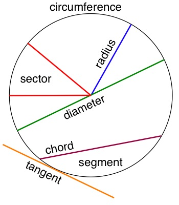

In mathematics, a circle is defined as a set of points which are all the same distance from a given fixed point. In other words, every point on the outside on the curved line around a circle is the same distance from the center of the circle.
There are many mathematical terms used to talk about circles.
